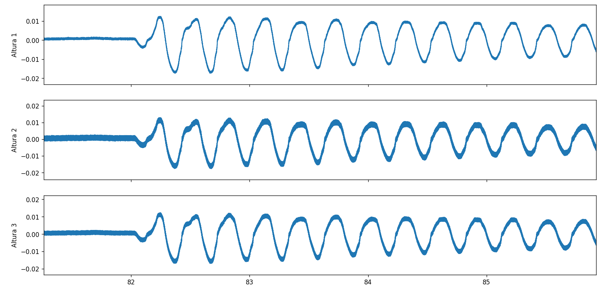
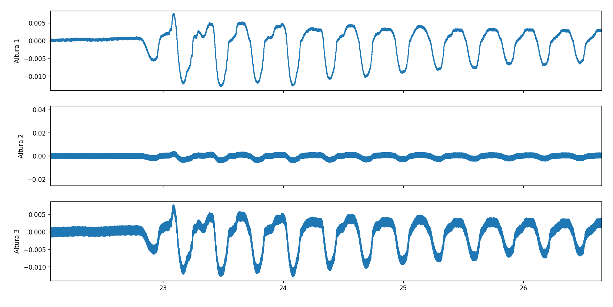
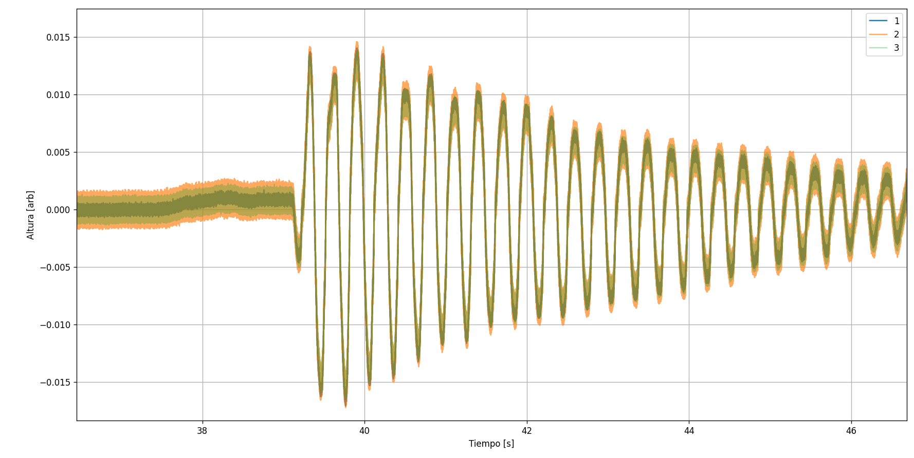
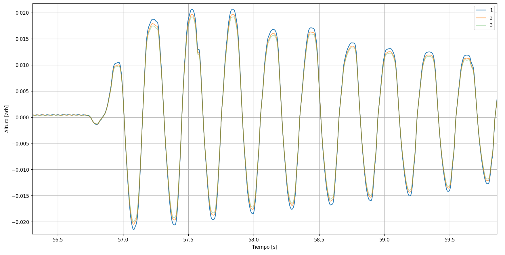
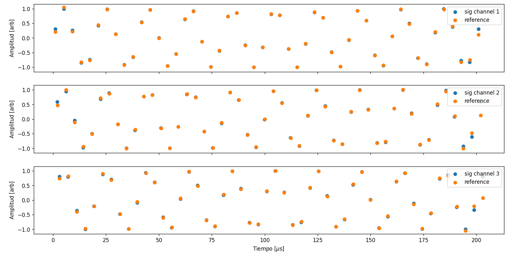
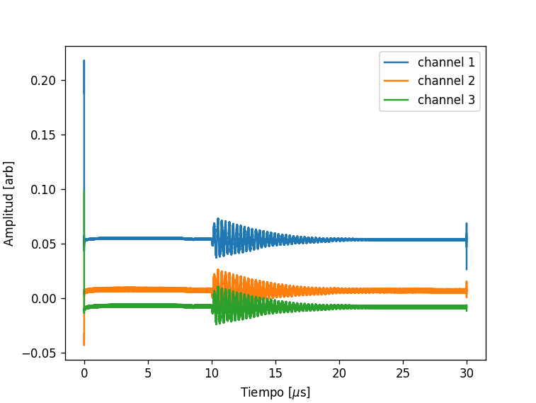

Journal Week 24
Table of Contents
Referencias
2026-06-08
[10:09]
Ya la semana pasada quedó instalado en la Compu de la sala (con Windows 7) el software del controlador de la placa de adquisición y Python (mediante miniforge3, con la versión que viene de base con Python 3.8 que es la más nueva compatible con Windows 7). Además, quedó descargado el software de LinMot-Talk, la versión 1 ya que la más nueva pedía actualizar el firmware de los motores.
[13:18]
Cuidado, al intentar correr measure_interface.py desde el pendrive tiene buffer overruns constantemente, en la Compu funciona bien.
Una cosa que noté es que con el sesnor dos desconectado pero el uno conectado se ven en la medición del segundo rréplicas de menor amplitud en la fase. Desconozco de momento si esto se debe al graficador en tiempo real, a algo de cómo parseo los binarios que manda la placa en tiempo real o a si hay ruido real que hace que mida de todas formas.
[13:53]
Lo siguiente es la medición en simultáneo de un punico sensor al cual le conecté los tres canales:

Y a continuación desconecté el 2. Se ven unas réplicas.

Lo siguiente sería probar con varias protoboards.
Y comparar los espectros ya que algunos parecen tener ruido de alta frecuencia más que otros.
[14:10]
Más allá de todo igual anda bastante bien, se superponen todas las curvas:

[14:17]
Aplicandoo un filtro butterworth de frecuencia de corte 45 Hz obtenemos lo siguiente:

Lo que sí hay es una amplitud ligeramente distinta, lo cual supongo a que los circuitos RLC son ligeramente distintos en la protoboard, ya que lo que debería coincidir a fin de cuentas es la altura que se relaciona con la fase por medio del factor de calidad y los valores de los capacitores.
[14:21]
Otra idea: usar uno de los pins de output analógico del motor programado como la posición actual para medir en simultáneo con la DAQ con el sensor. Ya que todas las calibraciones previas hice correlación temporal entre las señales para alinearlas.
[15:24]
Subí los manuales del Servo Drive E11-RS del motor y de la PersonalDaq 3001 al Github de la organización.
[16:05]
Estoy intentando inyectar energía con un forzado en la Ecuación de Burgers numérica.
2026-06-09
[08:54]
La fórmula correcta para el desfasaje es \(t_0 = - channel/n__{}_{}text{channels}\). Ya testeada.

Eso es la referencia resampleada para cada canal, siguiendo el esquema de lo que hago ahora, aunque probablemente a futuro lo más eficiente sea dejar lla referencia fija y resamplear la señal de los canales.
[10:19]
Aún desfasando correctamente la referencia en cada canal pareciera que sigue habiendo una diferencia de fase:

Y probablemente sea porque los RLCs son disntintos. Para terminar de verificar que el desfasaje funciona correctamente lo que debería hacer es medir la misma señal en TODOS los canales, pero sospecho que es el primer caso.